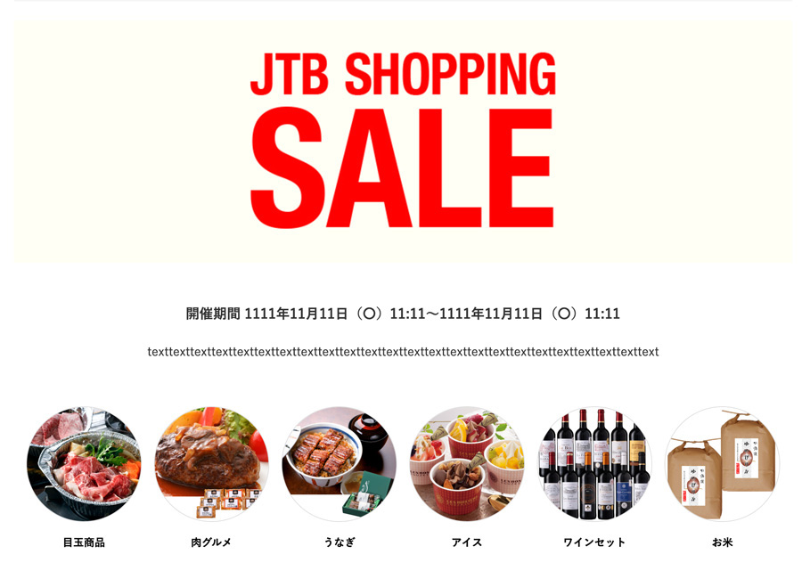
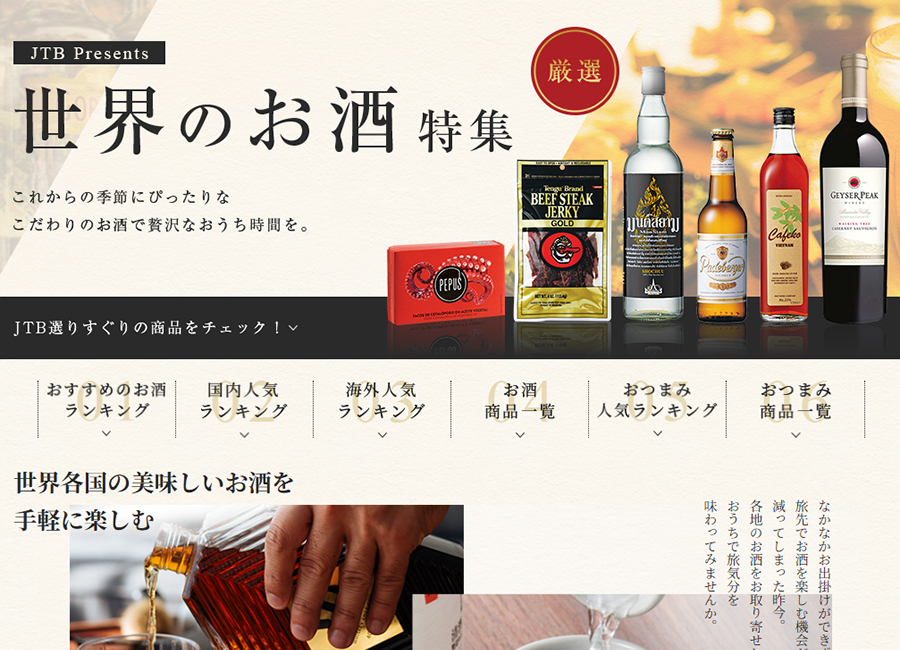
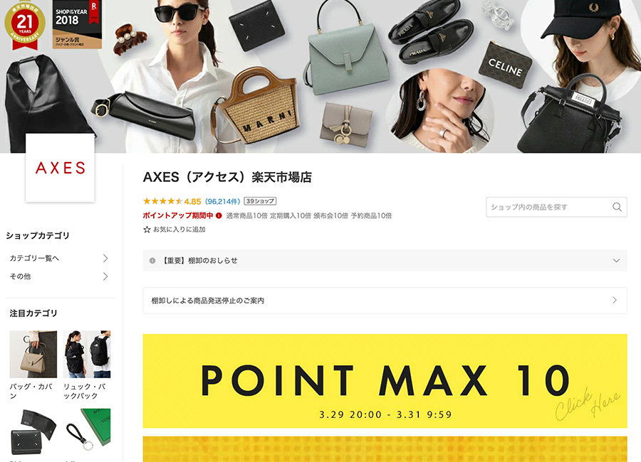
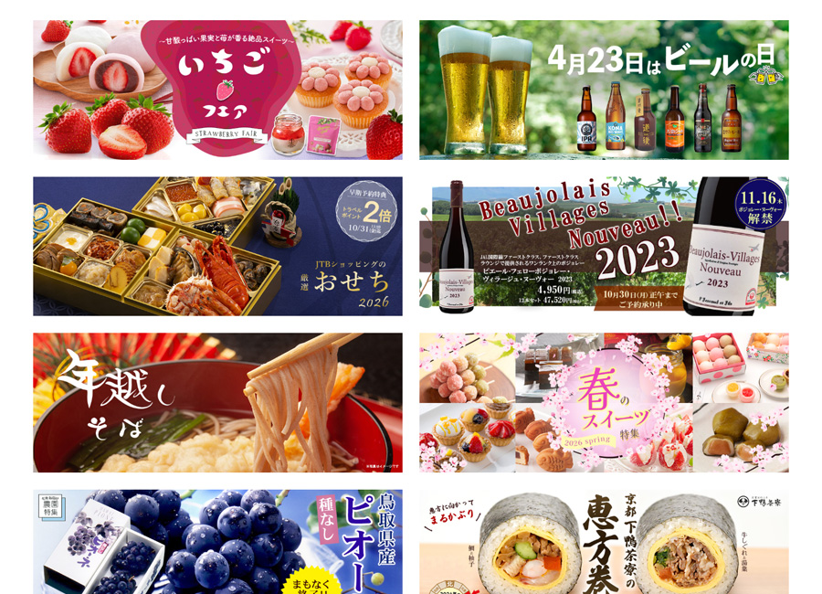

日々の更新と改善を中心に、構成設計からHTML/CSS実装まで対応しています

ECサイト運用（自社EC）｜JTBショッピング自社ECサイト（JTBショッピング）にて、特集ページ用HTMLテンプレートを設計・作成

ECモール運用（楽天＋Yahoo!ショッピング）｜JTB世界のおみやげ屋さん楽天市場・Yahoo!ショッピング 特集ページ制作（HTML構成・更新）

ECモール運用（楽天）|ブランドショップAXES楽天市場・Yahoo!ショッピング 特集ページ制作（HTML構成・更新）
改善事例①｜CVR改善・売上向上施策
改善事例②｜導線設計の改善による回遊性向上

バナー制作｜クリエイティブ実績
これまでEC領域を中心に、Webページの制作・更新・改善に携わってきました。 商品ページや特集ページの構成設計から、HTML/CSSによる実装までを一貫して対応しています。
日々の更新や改善が滞らないよう、 運用を前提とした構造や修正しやすさを意識したページ作りを大切にしています。
現在は、Web担当として日々の制作・更新・改善を自ら手を動かして進め、運用を前提としたWebページ制作を担える環境を希望しています。
石川 淳子
HTML / CSS
既存ページの修正・改修、レスポンシブ対応など、運用を前提としたコーディングを担当。 特集ページやLPを中心に、更新頻度の高いページでも修正しやすいHTML構造・CSS設計を意識して実装しています。 テンプレート設計や再利用しやすい構造整理、CMSを使わない静的ページ運用の経験があります。
制作・運用環境
自社ECサイトおよび楽天市場・Yahoo!ショッピングにて、ガイドラインを踏まえたページ制作・更新を担当。 GitHubを利用したポートフォリオの公開・更新（基本操作レベル）を経験。 RPA（ロボパット）は基礎学習中。